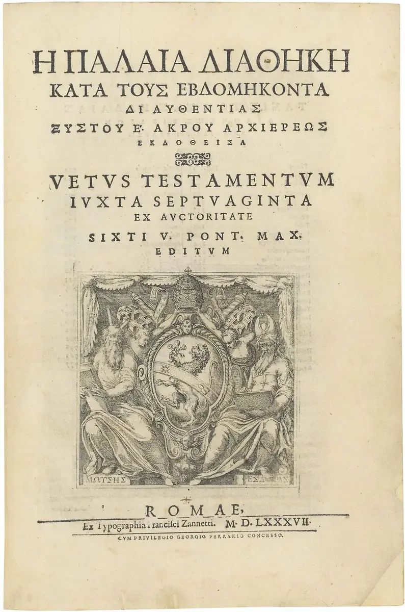
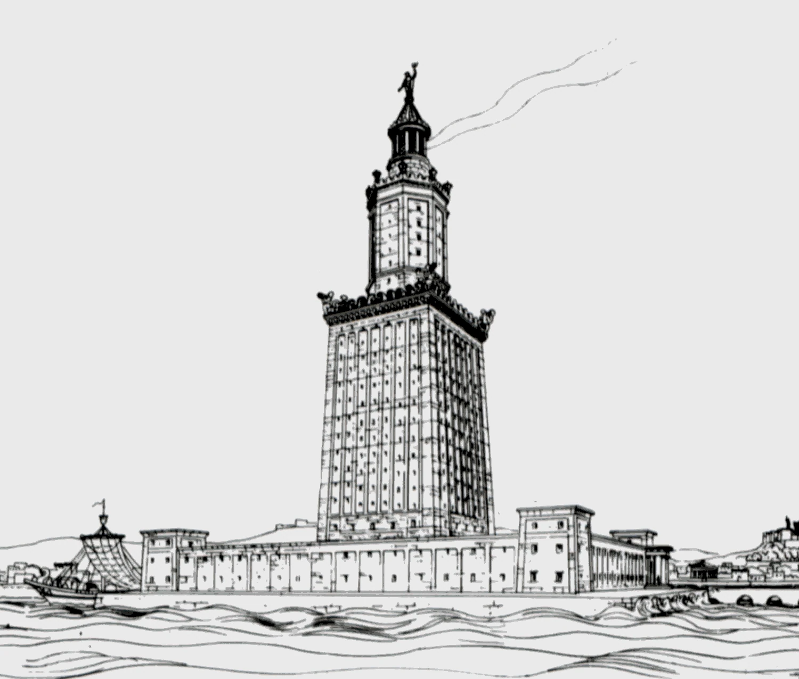
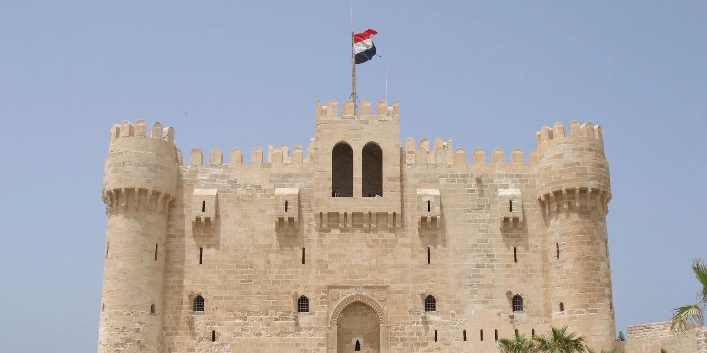
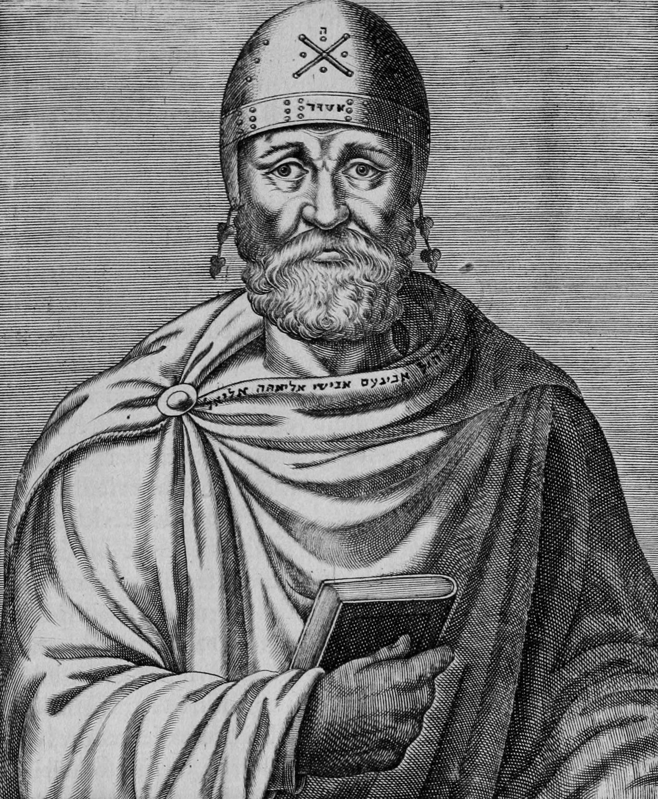

아직 펼치지 않은 카드가장 오래된 성경을 찾아서 · 2칠십인역히브리어 성경을 그리스어로 옮긴 첫 번역에는 ‘일흔’이라는 이름이 붙었어요. 왜 하필 일흔일까요?일흔 명이 함께 번역했다는 전설이 있는 성경이래!
기원전 3세기 ~ 1세기이집트 알렉산드리아 앞바다 · 파로스섬
칠십인역
알렉산드리아 앞바다의 파로스섬에서는 해마다 잔치가 열렸어요. 성경이 처음 그리스어로 옮겨진 곳이라고 전해진 바닷가였어요. 1세기 학자 필론이 적은 차례대로 그 잔치를 놓아 보세요.
옛날에 성경을 다른 나라 말로 처음 옮긴 섬이 있었대. 사람들이 해마다 거기서 소풍 같은 잔치를 했어. 우리도 하나씩 놓아 볼까?
검수 전 시안이에요(기준서 1판). 일흔두 명의 번역 이야기는 「아리스테아스의 편지」가 전하는 이야기라고 밝혔고, 섬의 잔치는 1세기 필론의 기록을 따랐어요. 바닷가 무대는 이 안내서가 필론의 글을 바탕으로 그렸어요. 상상은 ‘눈 감고 상상해 보기’에만 썼어요.
시안 확인용카드 단계 미리 보기
1
일흔두 명의 이야기
기원전 3세기, 이집트 알렉산드리아에는 그리스어를 쓰는 유대인이 많이 살았어요. 학자들은 그 무렵 그들을 위해 모세오경이 처음 그리스어로 옮겨졌다고 봐요.
「아리스테아스의 편지」라는 옛 글은 이 번역에 긴 이야기를 붙였어요. 왕 프톨레마이오스 2세가 바라서 예루살렘에서 원로 일흔두 명이 왔다고요. 학자들은 이 편지를 왕의 시대가 지난 뒤 유대인이 쓴 이야기로 봐요.
아주 옛날 이집트에 그리스 말을 쓰는 유대 사람들이 많이 살았대. 그래서 성경을 그리스 말로 옮겼어.
물어보기왜 그리스 말로 옮겨야 했을까?
2
바닷가 집의 일흔두 날
편지에 따르면 데메트리오스라는 사람이 일흔두 명을 데리고, 바다 위로 난 일곱 스타디온(1킬로미터 남짓) 둑길을 지나 다리를 건넜어요. 파로스섬 북쪽, 바닷가에 지은 아름다운 집이 일터였어요.
그들은 바닷물에 손을 씻고 기도한 뒤 맡은 구절을 읽고 옮겼어요. 저마다 옮긴 것을 서로 견주어 하나로 맞추었고, 일흔두 날 만에 일을 마쳤다고 해요.

다 마치자 데메트리오스가 유대인들을 그 집에 모아 번역을 읽어 주었어요. 사람들은 이 번역을 그대로 지키자며, 한 낱말이라도 더하거나 바꾸거나 빼는 사람에게 저주를 빌었다고 편지는 전해요. 섬 끝에는 프톨레마이오스 2세 때 완성된 큰 등대가 서 있었어요.
바닷물에 손을 씻고 기도한 다음, 다 같이 번역했대.
물어보기여럿이 함께 번역하면 어떤 점이 좋을까?
3
해마다 열린 섬의 잔치
그 뒤 250년도 더 지나, 알렉산드리아의 유대인 학자 필론이 이렇게 적었어요. 지금도 해마다 파로스섬에서 모임과 잔치가 열린다고요.
유대인뿐 아니라 다른 민족 사람들도 배를 타고 건너와, 번역의 빛이 처음 비친 자리를 기리고 하나님께 감사한다고 했어요. 아래 바닷가에 필론이 적은 차례대로 하나씩 놓아 보세요. 무대는 이 안내서가 필론의 글을 바탕으로 그렸어요.
필론의 잔치에 간 사람이라면, 어디에 자리를 펼까요?
“기도와 감사를 드린 뒤, 어떤 이들은 바닷가에 천막을 쳤고, 어떤 이들은 천막도 없이 바닷가 모래 위 하늘 아래 누워 친척, 친구와 함께 잔치를 벌였다. 그때만은 바닷가가 왕궁의 살림살이보다 더 아름다운 집이라고 여겼다.”
필론, 『모세의 생애』 2권 42항(1세기) · 욘지의 영어 번역(1855)을 이 안내서가 우리말로 옮김
필론은 번역하던 날의 이야기도 편지와 조금 다르게 전했어요. 보이지 않는 누군가 불러 주기라도 한 듯, 모두가 똑같은 낱말을 골라 썼다고요.
배를 타고 섬에 와서, 고맙다고 기도하고, 천막을 치고, 모래 위에서 잔치를 했대!
물어보기바닷가 잔치에 간다면 누구랑 같이 가고 싶어?
4
오늘의 파로스
등대는 여러 번의 지진으로 무너졌고, 15세기 말 술탄 카이트베이가 그 자리에 요새를 세웠어요. 섬을 잇던 둑길에는 흙이 쌓여, 지금은 도시가 들어선 땅이 되었어요.
바닷가의 잔치는 사라졌지만, 번역은 남았어요. 칠십인역의 낱말은 신약 성경 곳곳에 남아 있어요(아래 ‘함께 읽는 말씀’).

등대가 있던 자리에 지금은 성처럼 생긴 요새가 있어.
물어보기옛날 등대는 밤바다의 배들에게 어떤 일을 해 주었을까?
눈 감고 상상해 보기
바닷바람에 천막 자락이 펄럭여요. 멀리 등대가 하얗게 서 있고, 모래는 발바닥에 따뜻해요. 어디선가 빵 냄새와 웃음소리가 들려와요. 누군가 그리스어로, 누군가 히브리어로 감사의 노래를 불러요.
눈을 감아 봐. 바닷바람이 솔솔 불어. 모래가 따뜻해. 맛있는 빵 냄새! 다 같이 고마워요 노래를 불러.
나의 자리
내가 소중히 여기는 말을 다른 사람의 말로 옮겨 전한다면, 무엇을 가장 조심하고 싶나요?
다른 나라 친구에게 우리말을 알려 준다면 어떤 말부터 알려 줄래?
마음에 닿는 한 줄을 고르거나 직접 써 보세요. 한 줄을 남기면 이 자리의 도장이 찍혀요. 이 기기에만 저장돼요.
더 깊이
궁금한 칸만 펼쳐 읽어도 괜찮아요.
알고 보면
칠십인역 ‘일흔 사람의 번역’이라는 뜻의 이름이에요. 일흔두 명의 이야기에서 나왔고, 로마 숫자로 일흔을 뜻하는 LXX라고 줄여 써요.
필론 기원전 20년 무렵에 태어나 기원후 50년 무렵 세상을 떠난 알렉산드리아의 유대인 철학자예요. 그리스어로 글을 썼고, 성경도 주로 칠십인역으로 읽었어요.
파로스섬 필론은 섬의 목이 혀처럼 도시 쪽으로 뻗어 있고, 얕은 물과 모래톱이 파도 소리를 막아 조용하다고 적었어요. 그래서 번역하는 이들이 율법에만 마음을 쏟을 수 있는 곳으로 골랐다고요.
스타디온 옛 그리스의 거리 단위예요. 일곱 스타디온 둑길은 1.2킬로미터쯤이었어요.
기록마다 다른 점
함께 맞추었을까, 저절로 같았을까 「아리스테아스의 편지」는 일흔두 명이 저마다 옮긴 것을 서로 견주어 맞추었다고 해요. 필론은 보이지 않는 누군가 불러 주듯 모두가 똑같은 낱말을 썼다고 하고, 탈무드는 왕이 일흔두 명을 저마다 다른 방에 두었는데, 하나님이 모두에게 지혜를 주셔서 같은 뜻으로 옮겼다고 전해요.
누구를 위해 옮겼을까 편지는 데메트리오스의 권유로 왕이 자기 도서관에 유대인의 율법 책 번역을 갖추려 했다고 해요. 학자들은 그보다 그리스어를 쓰던 유대인들 스스로를 위한 번역으로 보는 편이에요.
언제 쓴 편지일까 편지는 왕의 신하가 쓴 것처럼 꾸몄지만, 유대교를 줄곧 높이는 글이라 학자들은 유대인이 썼다고 봐요. 기원전 200년 무렵에 썼다는 학자도, 그보다 늦게 기원전 63년 전에 썼다는 학자도 있어요.
가장 오래된 조각
번역을 처음 적은 두루마리는 남아 있지 않아요. 지금 남은 가장 오래된 칠십인역 조각들은 이집트에서 나온 파피루스예요. 파피루스는 같은 이름의 물풀 줄기로 만든 종이예요.
영국 맨체스터 존 라일랜즈 도서관의 신명기 조각(라일랜즈 458)은 기원전 2세기 중반의 것으로 봐요. 사해 사본이 나오기 전까지는 가장 오래된 그리스어 성경 사본이었어요.
기원전 1세기 무렵의 다른 신명기 조각(푸아드 266)에는 그리스어 글 사이에 하나님의 이름만 네모난 히브리 글자로 적혀 있어요. 처음부터 그렇게 썼는지, 나중에 다른 손이 써넣었는지는 학자마다 의견이 달라요.
함께 읽는 말씀
말씀은 뜻만 옮기고, 본문은 대한성서공회 개역개정으로 이어 드려요.
마태복음 1장 23절 이사야의 말을 인용하며 ‘처녀가 아들을 낳을 것’이라고 해요. 히브리어 이사야 7장 14절의 ‘알마(젊은 여자)’를 칠십인역이 ‘파르테노스(처녀)’로 옮겼고, 마태복음은 이 그리스어 낱말을 따라 인용해요. 이 낱말의 뜻을 두고는 오늘도 학자마다 풀이가 달라요.
이사야 7장 14절 마태복음이 인용한 바로 그 구절이에요. 우리말 성경과 견주어 읽어 보세요.
그림 속 필론

1584년 프랑스의 앙드레 테베가 펴낸 인물 판화집에 실린 필론이에요. 필론보다 1,500년쯤 뒤에 그린 것이라, 실제 얼굴과 같은지는 알 수 없어요.
직접 가 보기 · 집에서 읽기
확인한 날 · 2026년 11월 18일 · 바뀌기 쉬운 정보라 정기적으로 다시 확인해요
알렉산드리아 바닷가의 옛 등대 자리에는 카이트베이 요새가 있어 둘러볼 수 있어요. 여는 때와 여행경보는 가시기 전에 꼭 확인해 주세요.
집에서는 칠십인역을 옮긴 영어 성경(NETS)을 개인 공부용으로 무료로 내려받아 읽을 수 있어요. 가장 오래된 파피루스 조각도 맨체스터 대학 누리집에서 크게 볼 수 있어요.
필론이 적은 차례대로 금박
배, 감사 기도, 천막, 모래밭 자리, 잔칫상을 필론이 적은 차례대로 다 놓으면 카드에 금박이 입혀져요.
배 → 감사 기도 → 천막 → 모래밭 자리 → 잔칫상 차례로 놓기
나의 바닷가 자리 채색
둘 가운데 하나만 해도 카드가 채색돼요.
잔치에 간 사람이라면 천막 안과 하늘 아래 모래 위 가운데 어디에 자리를 펼지 고르기
아이와 함께 ‘영화처럼 보기’를 끝까지 보기
근거 보기 (15)
- 필론, 『모세의 생애』 2권 25~44항(욘지 영어 번역, 1855) — 프톨레마이오스 필라델푸스, 혀처럼 뻗은 섬의 목과 얕은 물·모래톱, 율법에만 마음을 쏟음, 보이지 않는 이가 불러 주듯 같은 낱말, 해마다 섬의 모임과 잔치
- 필론, 『모세의 생애』 2권 41~42항(Perseids, 욘지 번역) — 배로 건너옴, 번역의 빛이 처음 비친 자리, 감사, 천막과 모래, 친척·친구와 잔치, 왕궁보다 아름다운 바닷가
- 「아리스테아스의 편지」 301~311항(영어 번역) — 데메트리오스, 일곱 스타디온 둑길과 다리, 파로스 북쪽 바닷가의 아름다운 집, 서로 견주어 맞춤, 바닷물에 손 씻고 기도, 72일, 유대인들에게 읽어 줌, 고치는 이에게 저주
- Jewish Encyclopedia: Aristeas, Letter of — 데메트리오스의 권유로 왕의 도서관에, 진짜 편지가 아님, 유대인 저자, 연대(기원전 200년 무렵설 · 기원전 63년 이전설)
- 바빌로니아 탈무드 메길라 9a(Sefaria) — 일흔두 원로를 저마다 다른 방에 두었는데, 하나님이 저마다의 마음에 지혜를 주셔서 모두 같은 뜻으로 옮김
- Wikipedia: Septuagint — 길잡이(이름의 뜻, LXX, 모세오경은 기원전 3세기, 그리스어를 쓰는 유대인을 위해)
- Wikipedia: Philo — 길잡이(기원전 20년 무렵~기원후 50년 무렵, 성경을 주로 칠십인역으로 읽음)
- 맨체스터 대학 디지털 컬렉션: Rylands Greek Papyrus 458 — 신명기 두루마리 조각, 그리스도 이전 구약 본문의 가장 이른 증거 가운데 하나
- Wikipedia: Papyrus Rylands 458 — 길잡이(기원전 2세기 중반, 사해 사본 전까지 가장 오래된 그리스어 성경 사본)
- Wikipedia: Papyrus Fouad 266 — 길잡이(기원전 1세기, 네모난 히브리 글자의 하나님 이름, 처음부터인지 나중에 써넣었는지 의견이 갈림)
- Wikipedia: Lighthouse of Alexandria — 길잡이(프톨레마이오스 1세 시작·2세 완성, 지진으로 무너짐, 1480년 무렵 카이트베이의 요새)
- Wikipedia: Heptastadion — 길잡이(일곱 스타디온 둑길 1.2킬로미터쯤, 흙이 쌓여 땅이 됨)
- Wikipedia: Matthew 1:23 — 길잡이(마태복음이 칠십인역의 낱말로 이사야 7:14를 인용)
- The Bible and Interpretation(애리조나 대학): ’Almah in Isaiah 7:14 — 칠십인역의 parthenos와 마태복음 1:23
- NETS(펜실베이니아 대학) — 칠십인역 영어 번역 전자판, 개인 공부용 무료 내려받기
그림·사진·소리 출처
‘처음 만나는 기독교 문화’의 깊은 카드예요. 실제 인물의 사진은 쓰지 않았어요. 카드 단계와 남긴 글은 이 기기에만 저장돼요.